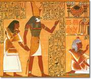
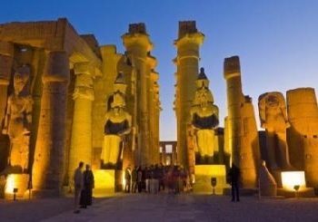
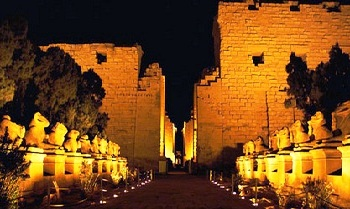

Notable Pharaohs :
| Name | Era | Description |
| Khufu | 2589 - 2566 B.C | He was the second pharaoh of the fourth dynasty. His Pyramid is one of the Seven Wonders of the World. |
| Khafra | 2558 - 2532 B.C | He was the pharaoh of Egypt in the fourth dynasty. According to the historian and Egyptologist he was the son and successor of Khufu. Khafra was famous in Egyptian history for building the Second Pyramid at Giza and the Sphinx that guards it. |
| Amenhotep I | 1525-1504 B.C | He was the second pharaoh of the 18th dynasty of Egypt. He inherited the throne from his father through military conquest and kept his dominance over Nubia and Nile Delta. Both him and his mother were credited for opening a worker village at Deir El-Medina. |
| Thutmose III | 1479-1425 B.C | He was the sixth pharaoh of the 18th dynasty. He ruled the Egypt along with his step mother Hathepsut. He also served as the head of his stepmother army, and was very famous for his valor and as a brave warrior king. Unconcerned about his own safety he marched in to the battle and won the famous battle of Megiddo and then later al Kadesh. |
| Tutankhamun | 1334-1325 B.C | He was the youngest pharaoh in the Egyptian history. He ascended to the throne at an age of nine or ten and died at an age of 18. Tutankhamun was famous for his tomb in the Valley of the Kings, which was laden with many amazing treasures. |
| Ramses II | 1279-1212 B.C | He was the third Egyptian pharaoh of the 19th dynasty. He was also regarded as the most powerful pharaoh of the Egyptian empire. He built many pretty temples and defeated the Hittites at the battle of Kadesh in 1274 B.C. Among many other queens his chief queen, Nefertari, was beautiful. Carvings of this beautiful queen can be seen on the Ramsses II's temple at Abu Simbel. He lived a long life, and died at an age of 92. His successors often referred him as the "Great Ancestor". |